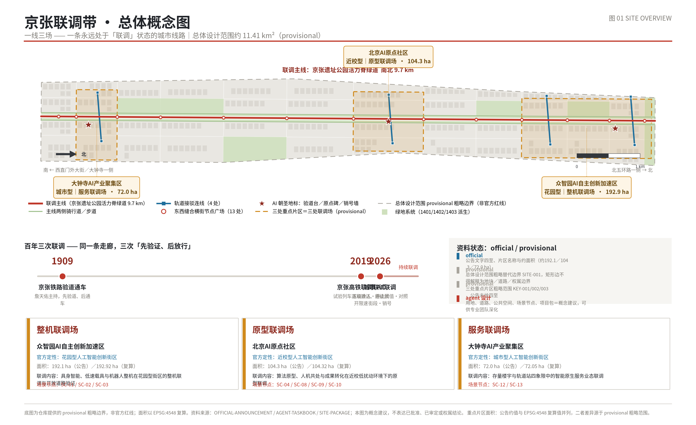
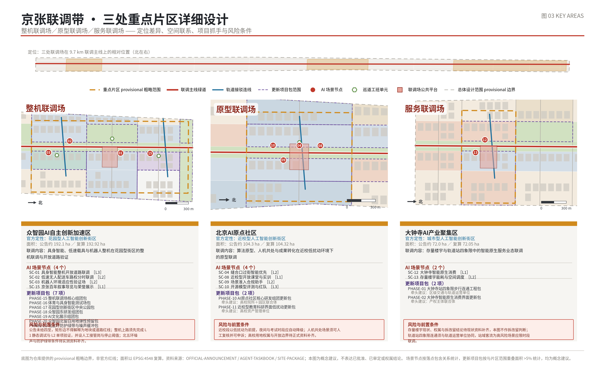
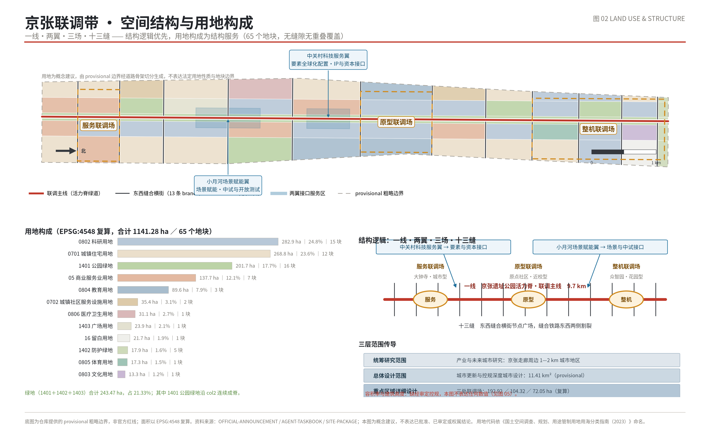
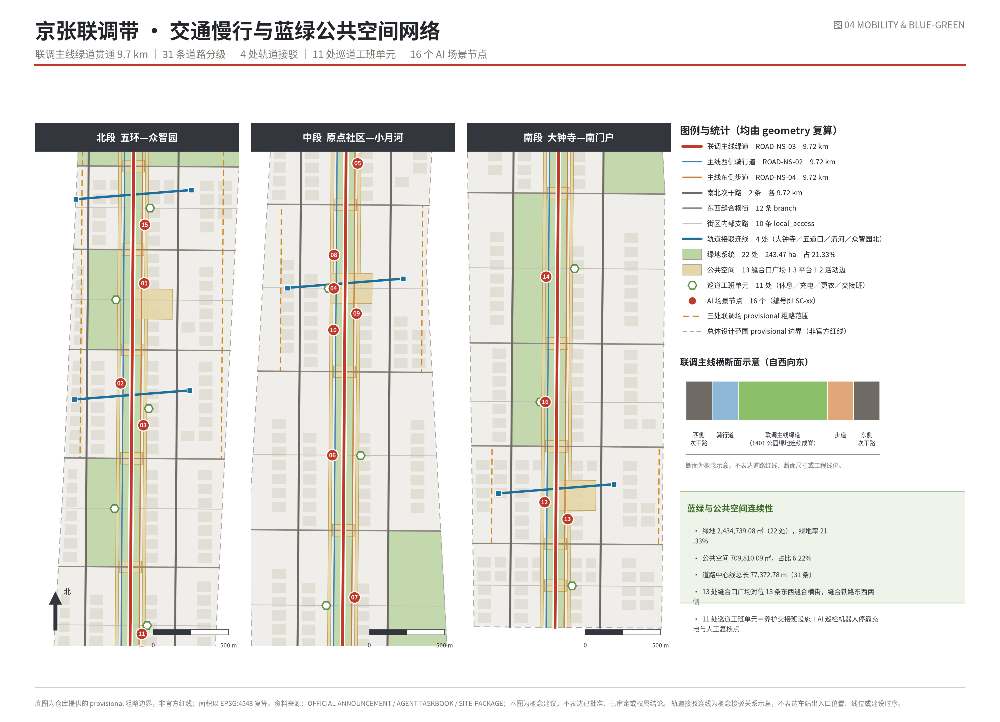
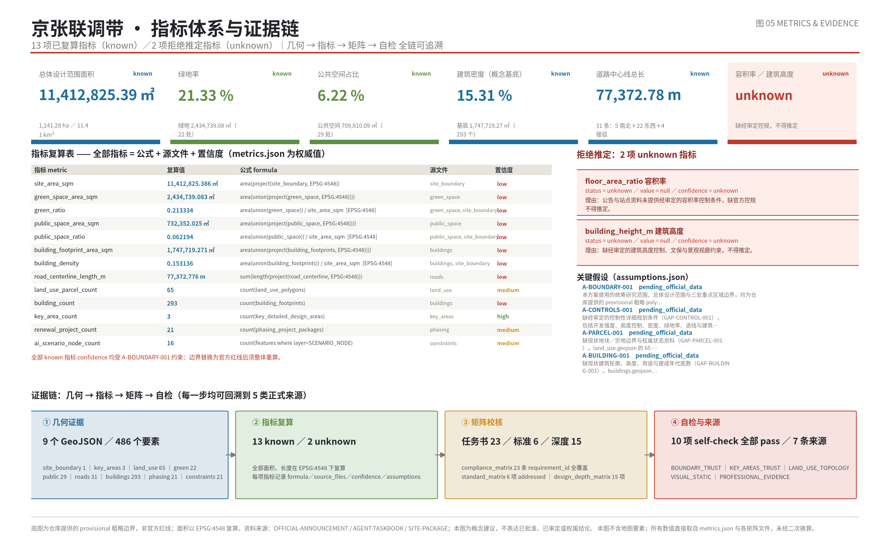

京张联调带：一条永远处于联调状态的城市线路
把铁路联调联试的验证制度转译为城市治理装置，以京张遗址公园活力脊为联调主线、整机／原型／服务三个联调场为核心，用五级准入与退出机制管理 16 个 AI 场景的逐级放开。
京张联调带：一条永远处于联调状态的城市线路
**本方案全部内容为概念建议与参考方案，供专业团队深化，不构成任何审批、实施或用地结论。** 方案所用的总体设计范围与三处重点区域边界，均为仓库提供的临时粗略 polygon，其复算面积为 11,412,825.386 ㎡，与公告约 11.4 平方公里的口径相互校核；但它不是官方红线，矩形边不得解释为地块、道路、权属或管理边界 来源 空间数据。因此本文中的一切面积、比例与落位都带有同一个前提：官方 polygon 到位之日，就是全部几何与指标整体重算之时 [assumption:A-BOUNDARY-001] [self_check:BOUNDARY_TRUST]。
一页执行摘要
铁路上有一套近乎冷酷的制度，叫“联调联试”：线路土建完成后、正式运营前，用试验列车逐项加载、逐级放开限速，每发现一个问题就挂号、整改、复测、销号，全部销号后才由签认人签字放行。它的要点不是技术先进，而是承认一件事——**新系统在真实环境中的表现不可预知，所以必须先验证、后放行，且随时可以退回上一级**。
本方案主张：一条以人工智能为主题的城市创新带，最需要借用的正是这套制度，而不是又一次“建成即宣告成功”的园区建设逻辑。因此我们把方案命名为**京张联调带（JINGZHANG COMMISSIONING BELT）**，并把它定义为一条**永远处于联调状态的城市线路**：这里的每一个 AI 场景都不是被“引进”的，而是被“准入”的；每一级准入都对应明确的空间范围、责任岗位、停止阈值、对照街段和退出动作。建成不是终点，销号才是；而销号之后还有年度复检。
空间上，方案是“**一线·三场·多单元**”。一线是京张遗址公园活力脊·联调主线，南北贯通约 9.7 公里，由 land_use 中间一列连续 12 段 1401 公园绿地与 1 段 1402 防护绿地构成，是全带唯一一条不被打断的公共空间 空间数据 深度。三场是三处重点片区，各承担一类联调任务：众智园承担整机联调、AI 原点社区承担原型联调、大钟寺承担服务联调，三者的名称直接写在几何属性里 空间数据 指标。多单元是 11 处巡道工班单元、13 处东西缝合横街节点广场、16 个 AI 场景节点和 21 个更新项目包，它们构成这条线路的“作业面” 指标 指标。
给评审的五问五答
**问一：这条带凭什么不是又一个科技园区？** 因为它有一个可失败的装置。五级准入（L1 静态调试／L2 单项验证／L3 逐级放开／L4 签认运营／L5 定期复检）为每个场景规定了它现在能占用多大的城市空间、多长的时段、需要多少人工在场；任一场景连续两个评估周期指标不达标，或与对照街段无显著差异，即自动降级 [self_check:CONTROL_SEGMENT]。一个“AI 应用”在这里可以被公开降级甚至摘牌，这是普通园区叙事不会承诺的事。
**问二：怎么证明 AI 真的改善了城市，而不是换了个说法？** 用对照街段。16 张场景卡逐条填写了 control_segment_zh 字段，要求“在同类街段设对照段，年度出具对照评估结论”，汇总为年度《一带体检报告》 空间数据。这是准实验设计的最低配置，也是本方案最愿接受检验的部分。
**问三：谁在这条带上生活和劳动？** 除五类人才画像外，方案明确纳入环卫、快递、骑手、安保、绿化养护五类一线劳动者，并为他们建了空间：11 处巡道工班单元提供休息、充电、更衣、饮水与交接班，同时兼作 AI 巡检机器人的停靠充电与人工复核交接点 空间数据 [self_check:LABOUR_INCLUSION]。劳动者由此从“被服务对象”变成联调制度中的责任岗位。
**问四：数字可信吗？** 全部已知指标由本包概念几何在 EPSG:4548 下重算并记录公式；65 个用地单元两两重叠为 0，与边界的残余缝隙合计 88.77 ㎡，占场地 7.8 ppm，属重投影残差而非设计缝隙 [self_check:LAND_USE_TOPOLOGY] 指标。容积率与建筑高度两项保持“待正式数据补齐”，不作任何推定 [assumption:A-CONTROLS-001]。
**问五：最大的不确定性是什么？** 边界。本方案的边界是临时粗略 polygon，一旦官方红线到位，面积、比例、用地划分与项目包范围都要整体重算 [assumption:A-BOUNDARY-001]。方案的设计判断——线路结构、准入机制、劳动者单元、对照评估——不依赖具体边界数值，但所有数值都依赖它。

图注：图中虚线为临时粗略边界，仅示意研究范围；实体信息集中在南北向联调主线、三处联调场与东西向缝合横街，不表达任何法定边界。
设计依据与资料清单
本方案的第一条纪律，是把“能作为设计依据的资料”和“只能作为背景或临时线索的资料”分开写清楚，而不是把所有引用混在一起显得扎实。
**可作为正式依据的来源共五条。** 其一是《百年京张AI创新带城市设计国际方案征集资格预审公告》，由北京市规划和自然资源委员会海淀分局于 2026 年 5 月 9 日发布，本方案的三大定位、五大功能、三区两翼、三层范围划分，以及三处重点片区“花园型／近校型／城市型”的定性，全部来自它 来源 标准。该公告的使用边界明确排除了精确 polygon、道路红线与法定控制条件，本方案不据此主张任何精确四至。其二是面向全球智能体的开源征集任务书摘录，它规定了 agent.1 至 agent.6 六项任务、场景卡要求、品牌与运营要求，也规定了统一的边界条款——本方案把这条边界条款直接落实成了五级准入的停止阈值与退出动作 来源 标准。其三至其五是三部行业规范性文件：城市设计管理办法约束编制内容与成果形式 标准，控规相关规程约束本方案应达到的控规深度城市设计表达 标准，用地用海分类指南约束 land_use 图层的编码口径 标准。65 个用地单元的 12 类编码即按该指南填写，不是自造分类 深度。
**只能作为背景使用的资料有三条。** 站点资料包提供了 schema、枚举、允许设计空间与成果清单；资料可用性登记表用于判断每条来源的权限层级；智能体事实包是导航层，它的缺资料清单被逐条转写进本包的假设文件 来源 来源 来源。这三条都是仓库自有的聚合材料，能说明“应该做什么、缺什么”，但不能替原始官方来源作出空间结论；凡仅由它们支撑的说法一律写成待核。本方案不使用任何非公开来源，所引材料均为公开文件、公开规范或已清权文档。
**只能作为临时线索的资料有一条，也是最关键的一条。** 总体设计范围与三处重点片区的几何，来自仓库维护的临时粗略 polygon，其在登记表中的可用性等级是 provisional_only，被明确禁止用于官方红线、法定控制、精确面积计算与审批依据 来源 来源。其推导方法本身也写得很坦白：以公告所述“京张遗址公园周边 1—2 公里城市地区和产业区”为走廊，用北五环路、学院路／西土城路、西直门外大街、大钟寺东路／荷清路等文字四至粗略定位，再在 EPSG:4548 下校核至约 11.4 平方公里；道路名称仅用于定位，不代表红线 空间数据。本方案在正文、图纸与离线阅读版中反复标注这一点，并把它作为第一条假设 [assumption:A-BOUNDARY-001] [self_check:BOUNDARY_TRUST]。
**三处重点片区的面积处理方式值得单独说一句。** 公告口径为 192.1、104.3、72.0 公顷，本包几何的复算值为 1,929,201.877、1,043,236.909、720,454.219 ㎡；二者在属性表中分列为两个字段，绝不用后者冒充前者 空间数据 [self_check:KEY_AREAS_TRUST]。临时 polygon 的复算值再精确，也只是对一个近似形状的精确测量。
**尚缺的资料，本方案不掩饰。** 缺经审定的控规条件，因此不推定开发强度与高度 [assumption:A-CONTROLS-001]；缺地块与权属资料，因此 65 个用地单元只是设计分区 [assumption:A-PARCEL-001]；缺现状建筑底数，因此 293 个建筑基底只是校核覆盖关系的概念基底 [assumption:A-BUILDING-001]；缺道路红线与断面，因此 31 条道路只是中线概念组织 [assumption:A-ROAD-001]；缺文保范围与建设控制地带，因此活力脊沿线一切节点按保守方式表达 [assumption:A-HERITAGE-001]；缺市政、消防与防洪排涝条件，也缺公共服务设施底数 [assumption:A-MUNICIPAL-001] [assumption:A-SERVICE-001]。这七条不是免责声明，而是七张待办清单，各章都写明了资料到位后需要重做哪一步 深度。
三层范围工作框架
公告把工作分成统筹研究范围、总体设计范围与重点区域范围三层。本方案不把它们理解为三个同心圆，而理解为**三种不同性质的工作**：第一层回答“这条带在区域和产业格局中是什么”，第二层回答“这条带作为一个连续的城市空间怎么组织”，第三层回答“三处片区各自怎么做、怎么先动起来”。三层之间的传递关系必须是可追踪的，否则宏观叙事和详细设计会各说各话。
第一层：统筹研究范围——产业与未来城市研究
这一层不生产法定成果，生产的是判断依据。工作目标有三：一是把“三区两翼”的功能分工落到可以检验的层面，而不是停留在功能名词的排列；二是通过全球 AI 创新生态案例，提炼可转化为空间供给与治理机制的做法；三是给出这条带的命名体系与识别方向。本层的成果表达是文字论证、结构关系图与案例摘要，不落具体地块 来源 深度。需要说明的是，统筹研究范围的外边界在本包中没有几何表达，因为公告未给出四至，而本方案拒绝为了图面完整而虚构一条研究范围线 [assumption:A-BOUNDARY-001]。
第二层：总体设计范围——控规深度的城市设计
这一层是本方案几何工作的主体，也是唯一有明确边界的一层。它的临时粗略边界复算面积为 11,412,825.386 ㎡，与公告声明的约 11,400,000 ㎡ 相差约 0.11%，该差值来自文字四至转几何的定位近似，属可接受范围，但不足以支撑精确面积结论 指标 空间数据。
本层的设计深度对标控规深度的城市设计：需要给出空间结构、用地布局、开发强度组织原则、高度与体量关系、拆改留分类方法、交通与慢行组织、市政与新型基础设施体系、蓝绿与公共空间体系、更新项目清单与分期 标准 深度。其中“开发强度”与“高度”两项，本方案只给关系与原则，不给数值：没有经审定的控规条件而给出容积率或高度数字，是把假设包装成结论 [assumption:A-CONTROLS-001]。
本层的几何组织是一套 13 行 × 5 列的骨架。13 行对应南北 13 段，自南向北为南门户段、大钟寺段、大钟寺北段、小月河南段、小月河北段、原点南门户段、AI 原点社区段、原点北段、众智园南门户段、众智园南段、众智园中段、众智园北段、北五环防护段；5 列对应东西向的五个带，中间第 3 列（grid_col=2）全部是活力脊主线绿地，两侧各两列分别承担居住与研发服务功能 空间数据。这套骨架不是形式游戏，其作用是让“段”成为可比较、可对照、可分期的最小治理单位——对照街段机制正建立在“同类段”之上。65 个单元覆盖全边界、两两不重叠，拓扑校验的残余缝隙合计 88.77 ㎡，占 7.8 ppm [self_check:LAND_USE_TOPOLOGY] 指标。
第三层：重点区域范围——规划综合实施方案深度
三处重点片区面积分别为约 192.1、104.3、72.0 公顷，合计约 368.4 公顷，占总体设计范围约 32% 指标 空间数据。本层要形成“定位—空间结构—建筑更新—交通慢行—公共空间—AI 场景—实施风险”七段式的可读小方案。由于三处 polygon 同样是临时粗略范围，本层的所有落位都必须声明为方向性设计，取得官方 polygon 后需要重新核定 [self_check:KEY_AREAS_TRUST] [assumption:A-PARCEL-001]。
三层之间怎么传递
传递链是明确的：第一层确定“这条带要联调什么”，第二层确定“联调发生在哪些段、由哪些公共空间承载、按什么顺序展开”，第三层确定“每个联调场的第一批场景、准入等级与退出条件”。反向链路同样成立——某个场景被降级或摘牌，会改变对应项目包的推进节奏，并回到第一层修正对该类技术成熟度的判断。这条反向链路是本方案与常规上下位规划关系的区别：它允许下层否定上层的乐观预设 [self_check:PHASING_EXIT_CONDITION]。
官方 polygon 到位后须重算什么
若官方红线替换临时边界，须按顺序重算：场地面积及其派生的三个比例指标；65 个用地单元的裁切与面积；22 个绿地要素（由 14xx 用地派生）；29 个公共空间要素中沿边界布置的部分；293 个建筑基底的归属与并集面积；31 条道路中线的端点截断与总长；21 个项目包的范围与面积；16 个场景节点与 5 个服务区的落点合规性 [assumption:A-GEOM-001] [assumption:A-METRIC-001] 深度。换言之，需要重算的是全部，需要保留的是结构判断本身。
统筹研究范围产业与未来城市研究
三大定位：不是三句口号，是三种时间尺度
公告给出的三大定位——百年京张文化带、都市AI生活体验带、AI融合创新带——在本方案中被理解为三种不同的时间尺度，它们叠在同一条走廊上。
**百年京张文化带处理的是“过去一百年”。** 1909 年京张铁路验道通车；2019 年京张高铁在同一走廊完成联调联试，用试验列车逐级放开速度等级；2026 年这条走廊要做的第三件事，是城市尺度的 AI 联调。三次都是“先验证、后放行”，本方案认为这才是这条走廊真正的文化连续性，比任何形式上的铁轨符号都更接近它的本意 来源 深度。
**都市AI生活体验带处理的是“当下每一天”。** 体验不等于展示：本方案把它定义为居民、通勤者、学生与劳动者在日常动线上能遇到、能使用、并且能投诉的 AI 服务。因此 16 个场景节点中有 10 个落在生活性而非产业性位置，且每一个都写明了人工复核责任岗与申诉可能 空间数据 [assumption:A-SCENARIO-001]。
**AI融合创新带处理的是“未来十年”。** 融合的难点不在技术，而在于城市空间愿不愿意划出“允许失败的区域”。五级准入把这件事制度化：L1 至 L3 是允许失败的区间，L4 才是签认运营，L5 还要年检 [self_check:CONTROL_SEGMENT]。
五大功能与三区两翼的协同回路
五大功能——AI 全栈自主创新体系、世界级 AI 创新生态、AI+场景赋能新范式、智能化 AI 活力城市、AI 治理全球话语权——在本方案中被组织成一条闭合回路，而不是五个并列条目。
回路的起点是**原型**：AI 原点社区（原型联调场）依托近校型低扰动环境，承担算法原型、人机共处研究与开源评测，对应 SC-08、SC-09、SC-10 三张场景卡 空间数据。原型成熟后进入**整机**：众智园（整机联调场）以花园型街区的支路网络提供开放道路条件，承担具身智能整机、低速载具与机器人的环境适应性验证，对应 SC-01、SC-02、SC-03 空间数据。整机通过后进入**服务**：大钟寺（服务联调场）以存量楼宇与轨道站四象限为载体，把验证过的能力转成智能原生服务业态，对应 SC-12、SC-13 空间数据。
两翼提供回路运转所需的两类要素。中关村科技服务翼在 r5c1 单元设接口，承担要素全球化配置、知识产权与资本服务，对应 252,309.2 ㎡ 的接口用地与 204,881.859 ㎡ 的服务区 空间数据。小月河场景赋能翼在 r3—r4 段，承担场景开放与赋能，包含 239,092.643 ㎡ 的场景赋能广场与 307,384.759 ㎡ 的服务区 空间数据。前者解决“能不能走出去”，后者解决“能不能落下来”。
回路的最后一环是**治理话语权**：话语权不来自宣示，而来自可被别人复用的方法。一份能被质疑、能被复现的年度《一带体检报告》，附带对照街段设计与降级记录，比任何宣传都更接近国际规则贡献 [self_check:PHASING_EXIT_CONDITION]。
命名体系与视觉识别方向（agent.1 响应）
**中文名“京张联调带”，英文名 JINGZHANG COMMISSIONING BELT。** Commissioning 一词在工程语境中特指“设备安装完成后、正式投运之前的调试与验收”，与中文“联调”精确对应，且在国际语境中不需要解释即可被理解。Belt 而非 Corridor 或 District，是因为这条走廊南北 9.7 公里、东西窄，是线性的、系带式的，且“带”暗含把两侧缝合在一起的动作。
三级命名体系随之展开：**线**级为“联调主线”；**场**级为整机联调场、原型联调场、服务联调场，这三个名称已经写进 key_areas 的 yard_name_zh 字段，不是文案层的修饰 空间数据；**单元**级为巡道工班单元与缝合口广场，编号自南向北连续。命名的一致性本身就是治理工具——当一个居民说“三号巡道单元的充电桩坏了”，系统应当准确知道那是哪里。
**视觉识别方向（供专业团队深化，非成品标志）：** 建议从三处取形。其一是人字形，取自京张铁路青龙桥的人字形展线，它是“用折返换取坡度”的工程智慧，也天然表达“进退可逆”；其二是里程碑，取自铁路沿线的公里标，可作为沿线 13 个段落的标识母题，与缝合口广场编号系统对应；其三是信号灯级序，用五级色阶对应 L1—L5 准入等级，使标识系统本身承载治理信息——一个场景节点的现场标牌应当直接显示它当前处于哪一级、上次评估结论是什么。字体、色彩、图形的最终方案需由专业视觉团队完成，并须完成素材清权 来源。
六个全球 AI 创新生态案例（公众常识层面的机制摘要）
以下六例仅使用公开常识层面的机制性事实，**不引用投资额、企业名单或产值，也不构成经核验的数据集**；引用目的是提取可转化的空间与治理做法。
**波士顿肯戴尔广场**的核心机制是“研究机构与产业在步行距离内混合”，其街区尺度小、底层界面连续、公共空间碎而密。可转化之处在于：本方案 22 条东西向缝合横街与 13 处缝合口广场，正是为了在 9.7 公里的线性走廊里制造类似的“短距离偶遇密度” 空间数据。
**伦敦国王十字**的核心机制是“以铁路遗产为骨架的长周期分阶段更新”，公共空间先行、产权主体统一协调、历史构筑物再利用。可转化之处在于分期逻辑：本方案 21 个项目包中，近期 8 个里有 3 个是公共空间与蓝绿类，正是“公共空间先行” 空间数据。
**新加坡 one-north** 的核心机制是“由单一开发主体统筹的科研社区，配套住宅与生活服务同步供给”。可转化之处在于人才留驻：本方案在 r7c3 设人才生活服务界面，并对应 SC-11 场景卡与 PHASE-13 项目包 空间数据。
**赫尔辛基 Maria 01** 的核心机制是“把废弃医院建筑群改造为创业社区”，以存量建筑低成本供给换取初创密度。可转化之处在于本方案对大钟寺与近校型界面的态度：优先低扰动改造而非新建 空间数据。
**首尔 Yangjae AI Hub** 的核心机制是“以公共机构提供算力、数据与测试环境作为公共产品”。可转化之处在于本方案的开源评测与红队场景 SC-10，主张评测基础设施应作为公共供给而非企业内部资源 空间数据。
**巴黎 Station F** 的核心机制是“单一大跨度存量建筑内的高密度租户组合与开放活动日历”。可转化之处在于运营节奏：本方案主张年度活动体系应与联调评估周期同步，使活动成为公开评估的场合而非纯展示 来源。
六例的共同点值得点明：**它们都不是靠一次性建成的**，都经历了十年以上的滚动调整，且都有一个明确的主体在长期承担协调责任。这正是本方案强调实施主体与退出条件的原因 [assumption:A-FUNDING-001]。
总体设计范围城市更新与控规深度城市设计
空间结构：为什么是“一线三场多单元”，而不是“多中心组团”
在 11.4 平方公里、南北长约 9.7 公里、东西窄的走廊里，做多中心组团结构是低效的：组团之间的联系必然依赖南北向机动交通，而这条走廊的南北向机动通道本就紧张。本方案因此选择线性结构，把公共空间而非道路作为主脊。
**一线**是京张遗址公园活力脊·联调主线。它在用地层面由 grid_col=2 的 13 个单元连续构成，自南向北为 LU-027 至 LU-039，其中 12 段为 1401 公园绿地、最北 1 段为 1402 防护绿地，单段面积从 66,355.3 ㎡ 到 132,775.6 ㎡ 不等，最宽处在 AI 原点社区段 空间数据 深度。在道路层面，主线由四条平行要素叠合：ROAD-NS-03 绿道、ROAD-NS-02 西侧骑行道、ROAD-NS-04 东侧步道，以及两侧的 ROAD-NS-01／NS-05 次干路，四者长度均约 9,715.87 米，构成一个“步行—骑行—慢速车—常规车”由内向外的速度梯度 空间数据 深度。这是 AI 载具分级路权的物理基础：L1、L2 级场景只能占用最内侧断面，L3 才可申请进入支路。
**三场**不是三个“中心”，而是三段功能特化的线路区间，其南北位置本身有意义：大钟寺在南端、紧邻轨道站与既有城市，承担面向公众的服务联调；AI 原点社区在中段、紧邻高校，承担低扰动的原型联调；众智园在北段、用地宽松且有留白，承担需要开放道路的整机联调 空间数据。不确定性最高的整机测试因此被安排在离密集城区最远的一端。
**多单元**是这条线路的日常作业面：13 处缝合口广场分布在横街与主线的交点上，11 处巡道工班单元沿主线布置，3 处联调场公共平台各约 54,605—54,660 ㎡，详见公共空间章节 空间数据。
功能布局与用地组织的基本判断
65 个用地单元的功能分布，可以用四句话概括其设计意图 指标 深度。
其一，**研发功能沿主线两侧成对布置**。0802 科研用地共 15 个单元、合计约 2,828,568.6 ㎡，占场地约 24.8%，是占比最大的一类。它们主要落在 grid_col=1 与 grid_col=3 两列，也就是紧贴活力脊的两侧，目的是让研发人员的日常步行范围内必然经过公共空间 空间数据。
其二，**居住功能布置在外侧两列**。0701 居住用地共 12 个单元、约 2,687,940.3 ㎡，占约 23.6%，主要在 grid_col=0 与 grid_col=4。这个安排承认一个现实：走廊两侧本来就是成熟居住区，更新不应以置换居住为代价 [assumption:A-PARCEL-001]。
其三，**服务与商业界面集中在南段与两翼接口**。05 商业服务业用地共 7 个单元、约 1,377,428.4 ㎡，占约 12.1%，其中三个位于南门户段与大钟寺段，两个位于两翼接口位置 空间数据。
其四，**教育、医疗、体育、文化与留白各自成组**。0804 教育科研 3 个单元约 895,962.9 ㎡；0806 医疗卫生 1 个单元约 311,396.8 ㎡；0805 体育 1 个单元约 172,552.9 ㎡，即体育与具身智能测试场；0803 文化 1 个单元约 132,710.5 ㎡，即 AI 文化展示组团；16 类留白发展用地 1 个单元约 217,115.1 ㎡，位于众智园北 空间数据。留白单元是本方案在用地层面为“联调可能失败”预留的物理余量——如果整机联调的结论是某类技术不宜进入开放城市空间，这块地不会因为已经建成而被迫使用。
开发强度组织：给关系，不给数值
本方案不提供任何容积率或建筑高度数值，因为没有经审定的控规条件 指标 指标 [assumption:A-CONTROLS-001]。能提供的是三条组织关系 深度。
第一条，**强度沿主线呈“两侧高、中心低”的剖面**。活力脊本体为绿地，其紧邻的第一排界面应控制强度以保证日照与开敞感，强度峰值退到第二排。第二条，**强度与轨道可达性正相关**，大钟寺站周边四象限应是全带强度最高处 标准。第三条，**强度与准入等级挂钩**，这是本方案的特有主张：一个片区新增的产业空间规模，建议与其已通过 L4 签认的场景数量建立弹性关系，即“验证到哪里，放开到哪里”。这条建议的具体系数需在取得官方控规条件后由专业团队测算，本方案只提出机制 深度。
高度与体量、风貌的关系判断
同样不给数值，给关系 深度。走廊内有京张铁路遗址与清华园车站旧址相关的历史要素，其文物保护范围与建设控制地带尚未取得，因此沿主线的高度必须按最保守方式对待——本方案建议在文保范围明确之前，主线两侧首排一律按低层界面进行方案研究，避免形成需要推倒重来的设计惯性 [assumption:A-HERITAGE-001]。体量方面，建议以“沿主线打散、离主线聚合”为原则：靠近活力脊的建筑体量宜小而通透，形成可穿越的界面；远离主线可适度聚合，为研发功能提供大进深空间。
城市更新总体框架
本方案对更新的总判断是：**这条带的主要工作不是新建，而是缝合与调试**。走廊两侧是成熟建成区，大规模拆除既不现实也无必要；而本带的核心资产是那条连续 9.7 公里的公共空间，其价值取决于能被多少人在多少个位置进入。因此更新的第一优先级是横向连通而非纵向开发，这直接决定了项目包的构成：近期 8 个包中有 4 个属交通与公共空间、蓝绿类 指标 深度。
重点区域详细设计
本章按规划综合实施方案的城市设计深度展开，表达层次参照建筑工程设计文件编制深度的相关规定校核 标准。三处片区的 polygon 同为临时粗略范围，因此以下落位均属方向性设计，取得官方边界后须重新核定 [self_check:KEY_AREAS_TRUST] 深度。

图注：三处片区按公告自北向南顺序编号为 KEY-001／002／003，图中面积为公告口径，复算面积另行分列，不互相替代。
众智园 AI 自主创新加速区 —— 整机联调场
**定位。** 公告将其定性为花园型人工智能创新街区，公告口径面积约 192.1 公顷。本方案将其命名为整机联调场，承担具身智能、低速载具与机器人整机在花园型街区中的整机联调与开放道路验证。选择这里做整机有三条理由：位于走廊北端、距密集城区最远，风险外溢可控；片区内有约 217,115.1 ㎡ 留白发展用地，为不可逆决策留出缓冲；花园型街区密度低、支路疏朗，具备半开放道路的物理条件 空间数据。
**空间结构。** 片区内部形成“一平台、两组团、一测试场、一留白”。整机联调场公共平台约 54,605.42 ㎡，是整机上路前的集结、检修与人工复核交接空间，也是公众观察测试过程的看台 空间数据。两组团为整机联调场核心组团（约 172,553.0 ㎡）与西研发组团（约 96,648.0 ㎡）空间数据。测试场即 r9c3 体育与具身智能测试场（约 172,552.9 ㎡），体育与测试设施复合，非测试时段回归公众使用 空间数据。留白位于 r11c4。
**建筑更新。** 不给地块级拆改留结论，只给原则：优先保留现状产业建筑中层高与柱网适合整机测试的部分，这类空间稀缺且难以复制；沿主线首排以界面改造为主 [assumption:A-BUILDING-001]。
**交通慢行。** 片区北侧有众智园北接驳连线（约 768.68 米）联系对外轨道方向 空间数据。内部支路是 SC-01 开放道路联调的载体，建议采用分时路权：工作日特定时段为测试时段，其余时段完全归还常规交通，且测试时段须在缝合口广场与巡道单元同步公示。
**公共空间与 AI 场景。** 两处主要绿地为众智园南门户公园（约 172,569.2 ㎡）与花园型创新街区中央公园（约 159,265.4 ㎡）空间数据。片区内落 SC-01（L3）、SC-02（L2）、SC-03（L2）三张产业测试验证场景卡与 SC-15（L1）；朝圣地标“验道台”位于 r11c3 文化组团 空间数据。
**实施风险。** 最大风险是整机测试与公众活动在同一空间内的时序冲突。缓解手段是把 SC-01 的准入等级严格控制在 L3——保留熔断与回滚，而非直接给到 L4 常态运行 空间数据 [assumption:A-SCENARIO-001]。
北京 AI 原点社区 —— 原型联调场
**定位。** 公告定性为近校型人工智能创新街区，公告口径面积约 104.3 公顷 空间数据。本方案命名为原型联调场，承担算法原型、人机共处与成果转化在近校低扰动环境下的原型联调。这是三场中最安静的一场：需要长期观察、与人反复交互、但不占用大量开放道路的验证都应放在这里。
**空间结构。** 形成“研发—教育—转化”三段。r6c1 原点社区核心研发组团约 265,551.4 ㎡，r6c3 原点社区东研发组团约 265,551.1 ㎡，二者夹住活力脊最宽的一段（LU-033，约 132,775.6 ㎡）空间数据。教育侧是 r6c0 近校型教育科研组团（约 277,790.1 ㎡）与 r6c4 清华东路教育组团（约 284,762.6 ㎡）。转化侧是 r7c1 成果转化组团约 199,138.4 ㎡，与 r7c3 人才生活服务界面约 199,138.2 ㎡ 隔脊相对——这个对位是刻意的：**成果转化的对面就是人才生活服务，把“留下来”和“做出来”放在同一段** 空间数据。
**建筑更新。** 原则是低扰动优先。近校型界面涉及高校资产，更新须以校地共建推进，避免施工期干扰教学科研；PHASE-11 低扰动更新包对应这一判断 空间数据。
**交通慢行。** 五道口方向接驳连线约 771.581 米是本片区与轨道网络的主要联系；内部优先保障步行连续性，机动交通以外围通过、内部到达为原则 空间数据 [assumption:A-ROAD-001]。
**公共空间与 AI 场景。** 原型联调场公共平台约 54,627.678 ㎡ 空间数据。落 SC-04 缝合口过街智能优先（L2）、SC-08 近校型开放课堂与实训（L1）、SC-09 场景准入合规助手（L2）、SC-10 开源模型评测与红队（L3）四张场景卡。朝圣地标“原点碑”位于本片区，用于展示开源贡献者与智能体贡献荣誉，其形制应可持续增刻 空间数据。
**实施风险。** 高校资产权属复杂、决策链长，因此不把关键路径压在校地协商上：本片区的近期项目包 PHASE-10 与 PHASE-13 均不依赖高校资产处置 空间数据 [assumption:A-PARCEL-001]。
大钟寺 AI 产业聚集区 —— 服务联调场
**定位。** 公告定性为城市型人工智能创新街区，公告口径面积约 72.0 公顷，是三片区中最小、也是城市界面最成熟的一处 空间数据。本方案命名为服务联调场，承担存量楼宇与轨道站四象限中的智能原生服务业态联调。
**空间结构。** 核心是轨道站四象限的步行连通。r1c1 大钟寺智能原生消费界面约 155,174.9 ㎡、r1c3 大钟寺AI服务研发组团约 155,174.7 ㎡、r1c4 大钟寺站东商务界面约 266,013.6 ㎡、r1c0 大钟寺西居住组团约 167,367.2 ㎡，四者被轨道与主线分割，现状步行联系薄弱 空间数据。因此本片区第一个项目包即 PHASE-01 大钟寺站四象限步行连通工程包（约 421,188.325 ㎡），建议区级交通与轨道运营单位牵头，市区两级更新资金加轨道一体化开发 空间数据。
**建筑更新。** 以存量楼宇界面更新为主，PHASE-02 界面更新包约 155,174.886 ㎡，建议产权主体联合体牵头、业主自筹加产业引导基金；更新方式限定在底层界面、垂直交通与设备系统三项，不涉及主体结构 空间数据 [assumption:A-BUILDING-001]。
**交通慢行。** 大钟寺站接驳连线约 772.045 米是四象限连通的骨架；停车与非机动车组织须在取得红线与断面资料后由交通专业深化，本方案不给配建结论 空间数据。
**公共空间与 AI 场景。** 服务联调场公共平台约 54,660.383 ㎡，大钟寺北绿楔约 163,663.5 ㎡ 作为片区北侧的雨洪缓冲与绿色屏障 空间数据。落 SC-12 智能原生消费（L1）与 SC-13 存量楼宇能耗与空间调度（L2）。朝圣地标“销号墙”设在大钟寺站前，公开展示全带每个场景的当前准入等级、停止阈值与销号记录——把治理过程放在人流最大的地方，是本方案对“AI 治理话语权”最直接的空间解释 [self_check:SCENARIO_PRIVACY]。
**实施风险。** 产权分散使界面更新难以协同，建议按“公共空间先行、界面跟进”推进：先由公共部门完成四象限步行连通，形成人流改善的可见证据，再推动产权主体参与 [assumption:A-FUNDING-001]。
AI 创新生态、人才画像与 AI+ 场景
为什么先写人，再写场景
大多数 AI 场景清单的问题在于，它们是从技术能力出发倒推需求的。本方案反过来：先确定这条带上有哪些人、他们在一天中的什么时刻会与这套系统发生关系、出问题时找谁——然后才决定要不要做这个场景。因此下面先给十类画像，其中五类一线劳动者按与人才画像同等的篇幅书写。这不是姿态，而是判断：**一条创新带的智能化水平，最终由它对最不容易发声的使用者的处理方式来定义** [self_check:LABOUR_INCLUSION]。
十类用户画像
**① 高校科研人员。** 主要活动在 AI 原点社区段与清华东路教育组团，日常动线是“实验室—食堂—通勤站点”，对空间的核心诉求是安静与可预期。他们对 AI 场景的态度往往最挑剔，因为他们知道系统会在什么地方失效。方案对应做法：把需要长期观察的原型场景（SC-08、SC-10）放在他们身边，并明确开放课堂与评测基础设施对高校开放 空间数据。缺口：缺高校科研人员通勤与作息的实际数据，场景时段安排目前只能按一般规律假设 [assumption:A-SERVICE-001]。
**② 初创团队开发者。** 主要活动在成果转化组团与研发组团，动线短、时段不规律、对成本极度敏感。他们最需要的不是补贴，而是**低门槛的测试机会**。方案对应做法：SC-10 主张评测与红队基础设施作为公共供给；五级准入的 L1、L2 提供了明确的、成本可控的入场路径——一个小团队可以只申请 L1，在封闭场地内完成静态调试，而不必先具备大规模部署能力 空间数据。
**③ 头部企业工程师。** 主要活动在众智园整机联调场，动线包含大量设备运输与场地占用。他们的诉求是“可预约、可重复、可记录”的测试条件。方案对应做法：整机联调场公共平台承担集结与检修，测试时段以分时路权方式公示 空间数据。
**④ 本地长住居民。** 分布在两侧 12 个居住单元，合计约 2,687,940.3 ㎡，是人数最多、也最容易在创新叙事中被忽略的一类。他们的核心诉求是三件事：噪声、通行、以及“这些机器出问题时我找谁”。方案对应做法：SC-05 活力脊人流与声环境自适应设为 L1，人工全程在场；所有场景卡强制填写人工复核责任岗；缝合口广场与巡道单元作为现场告知与投诉受理的物理点位 空间数据。
**⑤ 访客与开发者社区成员。** 非常驻，周末与活动日集中出现，动线以轨道站为起点。方案对应做法：三处朝圣地标构成一条可自行完成的公共体验路线，销号墙设在大钟寺站前作为路线起点 空间数据。
**⑥ 环卫工。** 作业时段集中在清晨与傍晚，作业面沿主线与横街全线展开，长期缺乏就近的休息、饮水与更衣空间。方案对应做法：11 处巡道工班单元沿主线布置，每处约 2,123—2,126 ㎡，明确提供休息、充电、更衣、饮水与交接班五项功能 空间数据。更进一步的做法是把他们纳入联调制度：SC-06 巡道工班设施报修智能体，让一线作业者成为设施状态的第一报告人，而不是被巡检系统监督的对象 空间数据。
**⑦ 快递员。** 动线特征是“高频短途、垂直交通耗时占比高”，在存量楼宇密集的大钟寺段尤其明显。方案对应做法：SC-02 低速无人配送车路权分时联调的评估指标中，必须包含“是否减少了快递员的单均步行距离与楼宇等待时间”这一项，而不能只评估机器本身的完成率——否则自动化的收益会全部沉淀在企业侧 空间数据。
**⑧ 外卖骑手。** 动线与快递员相近但时段更集中在午晚高峰，且更依赖非机动车通行条件与临时停放。方案对应做法：巡道工班单元兼作骑手充电与休息点；SC-16 一线劳动者派单公平性监测（L2）对派单强度与休息权益进行聚合监测。这张场景卡的隐私边界写得最严：仅使用聚合、匿名或现场传感数据，不采集个人身份、精确住址与订单明细，涉及个人的判定必须可人工复核并可申诉 空间数据 [self_check:SCENARIO_PRIVACY]。
**⑨ 安保人员。** 24 小时轮班，夜间独自值守比例高，是各类场景的实际“人工复核第一岗”。方案对应做法：巡道工班单元同时是 AI 巡检机器人的停靠充电与人工复核交接点，安保人员的交接班动作与机器人的换电动作在同一空间发生，这使人机之间的责任移交有一个具体的地点，而不只是一个系统里的状态变更 空间数据。
**⑩ 绿化养护工。** 作业集中在活力脊与 22 个绿地要素上，季节性强，涉及工具存放与用水。方案对应做法：巡道工班单元提供饮水与工具寄存条件；养护作业时段与 SC-05 的公共空间调节场景需在同一日历上协调，避免出现“系统在优化人流而养护车正在占道”的情形 空间数据 [assumption:A-MUNICIPAL-001]。
后五类画像共享同一套空间设施与同一张制度表。这是本方案的明确主张：**一线劳动者的服务不应作为福利项目单列，而应作为城市运行基础设施纳入常规配置**。11 处单元合计约 23,369 ㎡，占公共空间并集面积约 3.3%——代价不大，却决定了这条带的性质。
十六张 AI 场景卡的组织方式
16 张场景卡按“产业测试验证 3 张＋行业赋能 13 张”组织，覆盖交通、公共空间、市政、医疗、教育、法律、信软、生活服务、消费、商务、公共安全、文化、就业公平 13 个方向 指标。每张卡统一填写空间位置、服务对象、运行数据、隐私边界、人工复核、运营主体建议、对应图层、风险、准入等级与退出条件；其中隐私边界、人工复核与对照街段在几何属性中为强制非空字段，16 张无一缺项 [self_check:SCENARIO_PRIVACY]。全部场景卡均为概念建议，不代表任何已开展、已获许可或已安排的运营活动 [assumption:A-SCENARIO-001]。
**SC-01 具身智能整机开放道路联调（产业测试验证）。** 位置在整机联调场众智园支路网络，服务对象是头部企业工程师与测试机构，内容是机器人整机在花园型街区支路的开放道路适应性联调 空间数据。运行数据仅为整机自身传感数据与现场聚合观测；隐私边界要求不采集个人身份、精确住址与订单明细，涉及个人的判定必须可人工复核并可申诉。人工复核设专职责任岗，测试全程在场并持有物理急停权限。运营主体建议为市区两级科技主管部门与测试机构联合，对应 PHASE-15 整机联调场核心组团包。对应图层为 constraints 与 roads 的支路要素。风险是整机在非预期人流下的行为不可预知，因此准入等级止于 L3——保留熔断与回滚，不进入常态运行。退出条件：连续两个评估周期指标不达标，或与对照街段无显著差异，降级回 L2。
**SC-02 低速无人配送车路权分时联调（产业测试验证）。** 位置在整机联调场及其外延的东西缝合横街，服务对象是配送企业、快递员与骑手，内容是低速配送车与行人、骑行分时共享路权的准入验证 空间数据。运行数据为车辆轨迹与路段占用统计。隐私边界同上，且明确不得接入订单明细。人工复核为限定时段内人工可随时接管。运营主体建议为街道办事处与场景运营方共同承担现场管理。风险有二：一是与非机动车流冲突，二是自动化收益不流向一线劳动者。因此本卡的评估指标被要求包含劳动者侧结果。准入 L2，退出条件为降级回 L1。
**SC-03 机器人环境适应性验证场（产业测试验证）。** 位置在 r9c3 体育与具身智能测试场，服务对象是测试机构与研发团队，内容是雨雪、夜间、人流密集等城市工况下的整机验证 空间数据。运行数据为场地内传感与工况记录，不外联城市监控。隐私边界要求非测试时段场地完全归还公众，且不得在归还时段保留采集。人工复核为限定时段人工可随时接管。运营主体建议为体育主管部门与测试机构复合运营，对应 PHASE-16。风险是场地长期被测试独占，因此本卡的退出条件除指标外，额外建议加设“公众可用时长占比”这一约束性观察项。准入 L2。
**SC-04 缝合口过街智能优先（AI+交通）。** 位置在 13 处东西缝合横街节点广场，服务对象是全体过街者，尤其是老年人、推婴儿车者与携带工具的养护作业人员，内容是过街需求识别与信号优先 空间数据。运行数据为过街等待人数与等待时长的聚合统计，不做个体识别。人工复核为交通管理岗定期抽检与故障接管。运营主体建议为区级交通主管部门。对应图层为 public_space 的 13 个缝合口广场与 roads 的横街要素。风险是信号优先改善了过街体验却恶化了纵向通行，因此对照街段必须选择同类未改造横街，同时观测两侧指标。准入 L2，退出条件为降级回 L1 深度。
**SC-05 活力脊人流与声环境自适应（AI+公共空间）。** 位置沿联调主线全线，服务对象是居民、访客与养护工，内容是公园活动强度与噪声的自适应调节建议 空间数据。运行数据为人流密度与声压级的聚合值。隐私边界在本卡尤其关键：公共空间的连续感知最容易滑向普遍监控，因此本方案要求仅使用聚合、匿名或现场传感数据，且必须现场告知。人工复核为人工全程在场，这是本卡定为 L1 的直接原因——在公园里，任何自动化都应以人在场为前提。运营主体建议为园林绿化主管部门。风险是“自适应”沦为对居民活动的规训，因此评估指标应包含使用人次而非仅噪声达标率。退出条件为直接终止。
**SC-06 巡道工班设施报修智能体（AI+市政）。** 位置在 11 处巡道工班单元，服务对象是环卫、快递、骑手、安保、绿化养护五类一线劳动者，内容是一键报修与设施状态巡检 空间数据。运行数据为设施状态与报修工单，不关联报修人个人身份评价。人工复核为市政养护责任岗按限定时段处理并随时可接管。运营主体建议为街道办事处与市政养护单位。对应图层为 public_space 的 PUBLIC-PATROL 系列。风险是工单系统反向变成对劳动者的效率考核——本卡明确禁止将报修数据用于个人绩效。准入 L2，退出条件为降级回 L1 [self_check:LABOUR_INCLUSION]。
**SC-07 社区医疗预检与随访（AI+医疗）。** 位置在小月河北段社区医疗与康养组团，服务对象是本地长住居民尤其是慢病人群，内容是社区层面的预检分诊与慢病随访辅助 空间数据。运行数据为在医疗机构既有合规框架下的聚合统计，本方案不主张任何新增数据采集。隐私边界要求不采集可识别个人身份信息，涉及个人的判定必须可人工复核并可申诉。人工复核为执业医师全程在场，任何输出仅作辅助。准入 L1，退出条件为直接终止。运营主体建议为区级卫健部门，对应 PHASE-07。缺口明确：缺公共服务设施底数，本卡不给任何服务半径达标或缺口数量结论 [assumption:A-SERVICE-001]。
**SC-08 近校型开放课堂与实训（AI+教育）。** 位置在原型联调场近校型教育科研组团，服务对象是学生、社区居民与初创开发者，内容是高校与社区共享的 AI 实训与开放课堂 空间数据。运行数据为课程与场地使用的聚合统计，不采集学习者个体行为画像。人工复核为授课教师全程在场。运营主体建议为高校资产管理单位与街道共建。风险是开放课堂名义下的资源单向流出，故建议以固定时段共享起步。准入 L1，退出条件为直接终止。
**SC-09 场景准入合规助手（AI+法律）。** 位置在原型联调场，服务对象是申请准入的团队与受理岗位，内容是面向场景开放的合规自检与备案辅助 空间数据。运行数据为申请材料与规则库，不涉及个人数据。人工复核为受理岗位对每一份自检结论复核签认——助手只提示，不决定。运营主体建议为区级主管部门与法律服务机构。风险是自动化合规审查产生“形式合规”，因此本卡的评估指标应包含复核岗对助手结论的推翻率，推翻率过低反而是警号。准入 L2，退出条件为降级回 L1。
**SC-10 开源模型评测与红队（AI+信软）。** 位置在原型联调场核心研发组团，服务对象是初创团队、高校与评测机构，内容是公共评测基础设施与安全红队演练 空间数据。运行数据为模型输出与评测结果，评测过程与结果建议公开。人工复核为评测委员会对争议结论的人工裁定。运营主体建议为高校院所与园区联合体，对应 PHASE-10。这是全带唯一一张定为 L3 的非整机场景，理由是评测本身需要在接近真实的条件下反复运行，且其风险主要落在数字侧而非物理空间。风险是评测标准被单一主体主导，因此建议评测规则与红队用例同步开源。退出条件为降级回 L2。
**SC-11 人才生活服务一站式（AI+生活服务）。** 位置在 r7c3 人才生活服务界面，服务对象是初创开发者与新迁入研究人员，内容是落户、住房、子女教育等服务导引 空间数据。运行数据为政策规则库与办理流程，个人材料不留存于场景侧。人工复核为窗口人员全程在场。运营主体建议为街道办事处，对应 PHASE-13。风险是导引结论与实际办理口径不一致，因此要求所有输出标注生效日期与责任部门。准入 L1，退出条件为直接终止。
**SC-12 大钟寺智能原生消费（AI+消费）。** 位置在服务联调场大钟寺智能原生消费界面，服务对象是访客、通勤者与周边居民，内容是存量商业的智能原生消费体验 空间数据。运行数据为客流与业态使用的聚合统计。隐私边界要求不做人脸识别与个体消费画像，且顾客可选择完全不参与。人工复核为商户与运营方现场值守。运营主体建议为产权主体联合体，对应 PHASE-02。风险是“智能”沦为营销包装，因此评估指标应包含非高峰时段的到访变化，而非仅销售额相关指标。准入 L1，退出条件为直接终止。
**SC-13 存量楼宇能耗与空间调度（AI+商务）。** 位置在大钟寺站东商务界面与研发组团，服务对象是楼宇业主、租户与物业人员，内容是能耗、工位与会议空间的智能调度 空间数据。运行数据为设备与空间占用的聚合数据，不监测个体在位状态。人工复核为物业工程岗随时接管并保留手动优先。运营主体建议为产权主体联合体。风险是节能目标压过舒适度，故要求把租户投诉纳入评估。准入 L2，退出条件为降级回 L1。
**SC-14 活动日人流与应急疏散推演（AI+公共安全）。** 位置覆盖全线，服务对象是活动组织方、应急管理部门与全体到访者，内容是大型活动日的人流预测与疏散预案推演 空间数据。运行数据以历史活动的聚合客流与场地容量参数为主，推演在真实事件之外进行，不得使用可识别个体的轨迹数据。人工复核为应急管理岗对每版预案签认，系统结论不得直接触发现场处置。运营主体建议为区级应急与文旅部门。风险是推演结论被当作现场指挥依据，本卡明确其仅用于事前预案编制。准入 L2，退出条件为降级回 L1。
**SC-15 京张百年叙事导览与荣誉展示（AI+文化）。** 位置在众智园北段验道台及沿线三处地标，服务对象是访客、学生与开发者社区，内容是百年京张—中关村—AI 新文化的叙事导览 空间数据。运行数据为导览内容库与匿名使用统计。隐私边界要求不采集访客身份。人工复核为内容编审岗对史实与荣誉信息逐条核实——这一条尤其重要，因为生成式导览最容易在历史细节上出错。运营主体建议为区级文旅部门，对应 PHASE-19。准入 L1，退出条件为直接终止。
**SC-16 一线劳动者派单公平性监测（AI+就业公平）。** 位置在 11 处巡道工班单元，服务对象是骑手、快递员与环卫工，内容是派单强度与休息权益的监测 空间数据。运行数据严格限定为聚合、匿名的强度分布与休息时长分布，不采集个人身份、精确住址与订单明细。人工复核设劳动者代表参与的复核岗，任何涉及个人的判定都可申诉。运营主体建议为街道办事处与劳动者权益相关机构。这张卡是本方案最有争议、也最应该存在的一张：它把 AI 的监测能力指向平台侧的分配行为，而不是指向劳动者本人。风险是数据被反向用于个体考核，因此本卡建议监测结果只以街段级聚合形式发布。准入 L2，退出条件为降级回 L1 [self_check:LABOUR_INCLUSION] [assumption:A-SCENARIO-001]。
五级准入机制：本方案的可失败装置
| 等级 | 名称 | 可占用的空间范围 | 人工介入方式 | 退出动作 |
|---|---|---|---|---|
| L1 | 静态调试 | 封闭或低风险场地 | 人工全程在场 | 直接终止 |
| L2 | 单项验证 | 限定时段与限定范围 | 人工可随时接管 | 降级回 L1 |
| L3 | 逐级放开 | 扩大时段与范围 | 保留熔断与回滚 | 降级回 L2 |
| L4 | 签认运营 | 常态运行 | 定期抽检 | 降级回 L3 |
| L5 | 定期复检 | 常态运行并接受年检 | 年度对照评估 | 摘牌重新联调 |
这张表的关键不在分级本身，而在**每一级都写明了退出动作**。当前 16 张场景卡的分布是 L1 七张、L2 七张、L3 两张，没有任何一张直接进入 L4 或 L5 空间数据。这是刻意的：本方案认为一条新建创新带在起步阶段不应存在“已经签认运营”的 AI 场景，那意味着验证被跳过了。
**停止阈值统一规定为：任一场景连续两个评估周期指标不达标，或与对照街段无显著差异，即自动降级。** 第二个条件比第一个更严厉——它意味着“效果不错”是不够的，必须证明效果来自这个场景本身。这是本方案最愿意接受检验的承诺 [self_check:CONTROL_SEGMENT]。
对照街段与年度《一带体检报告》
对照街段的设置依托 13 行 × 5 列的用地骨架。由于 13 个南北段落在结构上高度同构——每段都有主线绿地、两侧研发、外侧居住——同类段之间具备可比性，可以为每个场景就近选出一个未部署该场景的对照段 空间数据。16 张场景卡的 control_segment_zh 字段全部非空，统一要求“在同类街段设对照段，年度出具对照评估结论” [self_check:CONTROL_SEGMENT]。
年度《一带体检报告》建议包含五部分：各场景当前准入等级与本年度变化；各场景与其对照街段的指标对比；降级、摘牌与销号记录；一线劳动者相关指标的单列章节；下一年度拟申请升级的场景清单及理由。报告建议公开发布，并在销号墙同步展示。
必须承认这套设计的局限：对照街段的可比性目前只由几何同构性支撑，缺乏实际人口、业态与出行数据的匹配校核。取得实际街段数据后，须由专业团队重新匹配可比性，本方案在自检中已记录这一待办 [self_check:CONTROL_SEGMENT]。
用地、建筑规模与拆改留方案

图注：用地按国土空间用地用海分类指南编码填写，共 12 类 65 个单元；中间一列为连续的活力脊主线绿地，是全图唯一贯通南北的要素。
用地布局的复算口径
65 个用地单元覆盖临时边界全域，两两重叠为 0，与边界的差集缝隙合计 88.77 ㎡，占 11,412,825.386 ㎡ 的 7.8 ppm。这个量级与经纬度到 EPSG:4548 往返投影的残差一致，属计算残差而非设计缝隙 [self_check:LAND_USE_TOPOLOGY] 指标 标准。之所以在正文里交代这个数字，是因为“无缝隙无重叠”是一句容易说的话，而 7.8 ppm 是一个可以被别人复算并推翻的说法。
12 类用地的构成如下：科研用地 0802 共 15 个单元约 2,828,568.6 ㎡（约 24.8%）；居住用地 0701 共 12 个单元约 2,687,940.3 ㎡（约 23.6%）；公园绿地 1401 共 16 个单元约 2,016,559.8 ㎡（约 17.7%）；商业服务业用地 05 共 7 个单元约 1,377,428.4 ㎡（约 12.1%）；教育用地 0804 共 3 个单元约 895,962.9 ㎡（约 7.9%）；社区服务用地 0702 共 2 个单元约 354,432.0 ㎡；医疗卫生用地 0806 约 311,396.8 ㎡；广场用地 1403 约 239,092.6 ㎡；留白发展用地 16 约 217,115.1 ㎡；防护绿地 1402 共 5 个单元约 179,086.7 ㎡；体育用地 0805 约 172,552.9 ㎡；文化用地 0803 约 132,710.5 ㎡ 空间数据 深度。
产业功能比例的设计判断
科研用地占约 24.8%、居住占约 23.6%，二者接近 1:1，这是本方案有意维持的比例。理由是：这条带的竞争力来自“人愿意留下来”，而不是“企业愿意搬进来”。如果产业空间供给显著超过居住供给，结果通常是通勤距离拉长、夜间空城、生活服务无法自持——这是国内外多个科技园区共同的教训，前文六个案例中运转较好的几处，都保持了较高的住居与生活服务混合度 来源。
需要坦白的是，这个 1:1 是概念分区层面的面积比，不是建筑规模比，也不是就业—居住人口比。缺现状建筑与人口底数，本方案无法给出后两者 [assumption:A-BUILDING-001]。
建筑规模：能算什么，不能算什么
**能算的是建筑基底。** 293 个概念基底的并集面积为 1,747,719.271 ㎡，对应建筑密度 0.153136，即约 15.31% 指标 指标 指标。这个数值的意义有限但真实：它证明概念基底与用地、绿地、公共空间三层在空间上自洽，未出现压占绿地或越界。
**不能算的是建筑总规模。** 总规模等于基底乘以层数，而层数由容积率与高度控制决定，这两项都没有经审定的官方条件，因此保持“待正式数据补齐” 指标 指标。需要同时说明的是，293 个基底本身也只是概念基底。它们由用地单元内按概念规则布置，以 parent_land_use_id 回指所属用地，不承载真实的建筑轮廓、高度、用途与建成年代信息 空间数据 [assumption:A-GEOM-001]。取得现状建筑底数后，这一层需要整体替换，建筑密度也需重算。
拆改留：只给方法与流程，不给地块级结论
本方案不对任何一个地块给出保留、改造或拆除的结论。buildings 图层中 293 个要素的 renewal_class_zh 字段统一填写为“待现状建筑与权属资料补齐后确定拆改留分类”，这不是占位符，而是本方案的实际立场 空间数据 深度。
给出的是一套四步判定流程，供资料补齐后使用。
**第一步，权属与合法性核验。** 先分清合法建成、历史遗留与违法建设三类，后两类不进入设计层面的拆改留讨论，须先完成权属处置。这一步的前置条件是清权地籍资料 [assumption:A-PARCEL-001]。
**第二步，文物与历史价值筛查。** 凡位于文物保护范围、建设控制地带内，或经评估具有工业遗产、铁路遗产价值的建筑，一律先按保留处理，改造方案须另行论证。京张铁路遗址与清华园车站旧址相关的保护范围尚未取得，因此这一步目前无法执行 [assumption:A-HERITAGE-001]。
**第三步，结构与使用价值评估。** 对合法建成且无历史价值约束的建筑，按结构安全等级、层高与柱网适应性、设备系统状况三项评估。本方案特别提示：**层高与柱网适应性应被赋予高权重**，因为整机测试、中试车间与实验空间对这两项要求苛刻，而这类空间一旦拆除极难在现行经济条件下重建。这是本方案在众智园片区提出“优先保留适合整机测试的现状产业建筑”的依据 深度。
**第四步，与公共目标的匹配核对。** 核对前三步通过的建筑是否阻断东西向缝合、压占活力脊界面或占据轨道站步行连通的关键节点。只有这一步才可能产生“结构尚可但建议拆除”的结论，且必须写明替代方案与补偿路径。
四步顺序不可颠倒——现实中拆改留结论出错，多数是从第四步的公共目标倒推回来，用规划意图覆盖了权属与价值判断。
空间供给与运营策略
本方案主张三类差异化供给：**低成本试错空间**，在成果转化组团与近校型界面以既有建筑改造提供，租期短、退出容易；**可预约测试空间**，即整机联调场与体育测试场复合场地，按时段而非按年出租，使小团队也能负担 空间数据；**长期研发空间**，服务已通过 L4 签认的成熟主体。三类空间与五级准入对应：准入等级越高，空间稳定性越强。具体规则需由专业团队与主管部门另行制定 [assumption:A-FUNDING-001]。
交通、轨道、市政与公共服务设施

图注：图中所有道路为中线概念组织，长度用于衡量东西向缝合密度，不代表工程线位或红线。
路网组织：把东西向当作主要问题
这条走廊的交通问题不在南北，而在东西。京张铁路遗址本身是一条历史性的分隔线，其两侧的城市生活长期被切断。因此本方案的路网组织把资源集中投向东西向：31 条道路要素中，22 条是东西向的缝合横街与街区支路，5 条南北向，4 条轨道接驳连线，中线总长复算为 77,372.776 米 指标 空间数据 深度。
22 条东西向要素中，11 条为 branch 等级的缝合横街，11 条为 local_access 等级的街区内部支路，二者在南北序列上交替出现。单条长度从 1,066.129 米到 1,309.141 米不等，最长在小月河北段附近，最短在众智园中段——这个差异来源于走廊本身的宽窄变化 空间数据。按走廊南北长约 9.7 公里、22 条横向要素计，平均横向间距约 440 米。这个密度是本方案愿意被质疑的一个判断：440 米对于步行缝合来说仍偏稀疏，理想值应在 250—300 米，但受既有铁路与用地条件限制，本阶段先保证 440 米的连续性，后续在取得现状资料后加密 [assumption:A-ROAD-001]。
南北向的速度梯度
五条南北向要素构成断面上的速度梯度，由内向外为绿道（约 9,715.873 米）、西侧骑行道、东侧步道与两侧次干路，五者长度几乎相同，说明全程平行 空间数据。其治理含义是：AI 载具的准入等级决定它能进入哪一条。L1 不上路；L2 可在限定时段进入内侧慢行断面；L3 才可申请进入支路；进入次干路需 L4 以上，而目前无一场景达到该等级。
轨道站点一体化
四条接驳连线分别指向大钟寺站（772.045 米）、五道口方向（771.581 米）、清河方向（771.330 米）与众智园北（768.680 米），长度接近，说明四处接驳的空间代价相当 空间数据。其中大钟寺站是唯一位于重点片区核心的站点，其四象限步行连通被列为近期第一个项目包 空间数据。站城一体的具体做法——地下连通、二层步行系统还是地面平交改造——需在取得轨道设施资料与红线后由交通专业比选，本方案不作工程结论 [assumption:A-ROAD-001] 标准。
慢行断点与停车
慢行断点主要出现在三处：铁路遗址与横街的交叉处、次干路与主线绿道的交叉处、以及轨道站周边的地面交通组织处。本方案的处理原则是把断点位置与 13 处缝合口广场对位——广场不是装饰性节点，而是断点的解决装置，它提供了过街等待、方向识别与临时驻留的空间，也是 SC-04 的部署位置 空间数据。
停车与非机动车组织不给配建数值。缺官方红线与断面资料，任何配建结论都是虚构 [assumption:A-ROAD-001]。能给的原则有两条：非机动车停放应与巡道工班单元、缝合口广场同址设置，避免独立占地；机动车停车宜集中在片区外围并向内步行，尤其在众智园整机联调场，测试时段的支路必须保持无停车状态。
市政与新型基础设施
传统市政方面，本方案不给任何管线、消防、防洪排涝结论，因为相关专项资料尚未取得 [assumption:A-MUNICIPAL-001] 深度。能提出的是体系性需求：11 处巡道工班单元需要给水、排水与充电三项接入，13 处缝合口广场需要照明与应急电源，3 处联调场公共平台需要较大容量的电力接入以支撑整机检修与充换电。这些需求尚未与任何既有管线核对，须由市政专业在取得专项资料后校核承载力 [self_check:PHASING_EXIT_CONDITION]。
新型基础设施方面，本方案提出三条主张。**其一，端侧算力优先于集中算力。** 本带的场景多为现场感知与实时响应类，将算力下沉到场景节点与巡道单元，既降低数据回传量，也天然收窄隐私边界——数据不出现场，是比任何加密承诺都更可靠的保护 [self_check:SCENARIO_PRIVACY]。**其二，感知设施与公共设施合杆合建。** 照明杆、指示牌与广场设施应作为感知设备的统一载体，避免设备沿街累积；每处感知设施须在现场标明用途、责任主体与投诉方式。**其三，充电需求统筹。** 巡道工班单元的人员充电、机器人换电与非机动车充电应共用一套设施与管理体系，三类需求在时段上恰好错峰 空间数据。
公共服务设施
缺公共服务设施底数，本方案不给任何设施容量、服务半径达标结论或缺口数量 [assumption:A-SERVICE-001] 深度。能给的是三条布局判断，以及一份待核清单。
一是社区服务设施沿外侧居住列布置而非向主线集中，0702 的两个单元分列大钟寺北段与原点北段 空间数据。二是医疗设施集中在小月河北段医疗与康养组团（约 311,396.8 ㎡），对应 SC-07 与 PHASE-07 空间数据。三是人才生活服务集中在 r7c3 界面，与成果转化组团隔脊相对 空间数据。
待核清单包括教育设施学位供给、医疗设施容量、养老设施分布、文体设施使用率，以及五类一线劳动者现有休息点位分布——最后一项尤其重要：11 处巡道工班单元目前按主线均布选址，若已有既有点位，应优先改造而非新建 [assumption:A-SERVICE-001]。
蓝绿空间、公共空间与城市风貌
绿地体系：一条脊加四类补充
绿地并集面积为 2,434,739.083 ㎡，绿地率 0.213334，即约 21.33% 指标 指标。22 个绿地要素全部由 14xx 用地派生，以 linked_land_use_id 回指所属用地单元，因此绿地与用地两个图层之间不存在口径分歧 空间数据 深度。
体系构成为“一脊四补”。**一脊**是活力脊主线，由 GREEN-007 至 GREEN-018 共 12 段连续贯通，单段 66,355.3 至 132,775.6 ㎡，合计约 1,141,976 ㎡，接近全部绿地的一半，是这条带最重要的单一资产。**四补**为：绿楔（大钟寺北绿楔约 163,663.5 ㎡，兼作雨洪缓冲）、门户公园（约 172,569.2 ㎡ 与约 159,265.4 ㎡ 两处）、侧绿带（学院路侧绿带约 379,084.5 ㎡，单体最大，缓冲东侧界面）、防护绿地（北五环防护段 5 处合计约 179,086.7 ㎡）空间数据。
21.33% 的绿地率是一个需要被正确解读的数字。它不高，但这条带的绿地质量特征不在总量而在**连续性**：一条 9.7 公里不被打断的公共绿廊，其使用价值远高于同等面积的分散绿地。缺现状绿地资料，本方案无法核对这 21.33% 中有多少是既有绿地、多少需要新增 [assumption:A-GEOM-001]。
蓝色空间
小月河是走廊内的主要水系线索，方案在 r3c1 设小月河场景赋能广场（1403 广场用地，约 239,092.6 ㎡），作为水系与场景赋能翼的结合点 空间数据。清河方向通过 ROAD-TR-03 接驳连线联系。必须说明的是，本方案没有取得水系蓝线、防洪排涝与海绵城市条件，因此不提出任何驳岸改造、蓄排设施或水质结论，蓝色空间在本阶段只作为公共空间体系的组织线索 [assumption:A-MUNICIPAL-001]。
公共空间体系与那个 22,541.935 ㎡
公共空间并集面积为 709,810.090 ㎡，占场地 0.062194，即约 6.22% 指标 指标。29 个要素由四类构成：13 处缝合口广场（每处约 11,280—11,294 ㎡）、2 条主线活动边（各约 199,179.9 ㎡）、3 处联调场公共平台（各约 54,605—54,660 ㎡）、11 处巡道工班单元（每处约 2,123—2,126 ㎡）空间数据。
四类要素的分工是：活动边是“面”，提供主线两侧的日常活动带；缝合口广场是“点”，处理东西向断点；联调场平台是“场”，承担测试与观察；巡道单元是“岗”，承担运维与人工复核。它们在空间上必然交叠，这正是求和面积 732,352.025 ㎡ 与并集面积 709,810.090 ㎡ 相差 22,541.935 ㎡ 的原因，详见指标章节 [self_check:METRIC_RECALC]。
三个 AI 朝圣地标（agent.4 响应）
三处地标不是雕塑，而是三种可持续更新的信息装置。所有落位为示意，文保范围明确后须重新核定位置、体量与建设方式 [assumption:A-HERITAGE-001]。
**验道台**，位于众智园北 r11c3 文化组团，纪念 1909 年京张铁路验道与 2019 年京张高铁联调联试 空间数据。它的核心不是纪念，而是**展示当前联调进度看板**：全带各场景的准入等级、本年度升降级情况实时呈现。把百年前的验道与今天的联调放在同一块牌子上，是这条带文化叙事最凝练的表达。
**原点碑**，位于 AI 原点社区，用于展示开源贡献者与智能体贡献荣誉。它的形制要求是**可持续增刻**——每年新增的贡献者名字被刻上去，碑随时间增长。这一要求排除了一次性完成的纪念碑形式，需要专业团队设计可扩展的载体 空间数据。
**销号墙**，位于大钟寺站前人流最密处，公开展示每个场景的准入等级、停止阈值与销号记录，包括失败与降级 空间数据。它是三处地标中最不像地标、却最重要的一个：一座愿意在最显眼处公示自己失败记录的城市，才谈得上 AI 治理话语权。
三者沿主线自北向南分布，间距约 3—4 公里，构成一条可步行或骑行完成的公共体验路线，与 SC-15 导览场景对应。
东西缝合与南北贯通策略
**南北贯通**依靠一件事：主线绿地在用地层面连续 13 段无中断，且四条平行慢行要素全程平行 空间数据。贯通的难点不在设计而在交叉——主线与 22 条东西向要素必然相交，每一处交叉都是潜在的中断点。本方案的原则是：主线在交叉处优先，慢行不降级、不绕行、不上下翻越，具体处理方式待红线资料补齐后由交通专业确定。
**东西缝合**依靠 22 条横向要素与 13 处缝合口广场的组合。缝合的评价标准不是修了多少条路，而是**两侧居民是否真的过来了**——因此 SC-04 的对照评估指标应包含横街的双向步行流量比，而非仅过街等待时长 空间数据。
城市风貌与建筑基调
不给高度与体量数值，给三条基调判断 深度。**其一，工程感的克制。** 建议以可读结构的材料为主，避免把 AI 主题理解为曲面造型与灯光秀；这条走廊的气质来自铁路工程传统，不来自科幻想象。**其二，界面的可穿越性优先于立面的完整性。** 靠近主线的首排建筑，底层通透率应高于常规商业街区，允许人从建筑之间随时进入活力脊。**其三，屋顶作为第五立面统一考虑。** 建议在更新中统一处理设备、色彩与绿化，因为这条带未来会有大量低空与高视点的观察角度。三条基调均为方向性建议，须在取得官方控规条件与文保约束后转化为可执行的风貌导则。
更新项目清单、实施政策与分期计划
21 个项目包与它们的共同退出条件
更新项目共 21 个包，按建议时序分为近期 8 个、中期 9 个、远期 4 个 指标 深度 [self_check:PHASING_EXIT_CONDITION]。**本方案分期计划的核心规则是：进入下一期以上一期的退出条件是否满足为准，而不是以时间为准。** 21 个包的 exit_condition_zh 字段填写了同一句话——“若联调指标连续两个评估周期不达标或对照街段无显著差异，应暂停扩面并回到上一准入等级” 空间数据。统一而非逐包定制，是刻意的：退出条件如果因项目而异，就会在执行中被逐个放宽。
**近期（建议 2026—2028 年，可先行联调）8 个包**：大钟寺站四象限步行连通工程包（约 421,188.3 ㎡，建议由区级交通与轨道运营单位牵头，市区两级更新资金加轨道一体化开发）；大钟寺智能原生消费界面更新包（约 155,174.9 ㎡，产权主体联合体，业主自筹加产业引导基金）；大钟寺北绿楔与雨洪缓冲包（约 163,663.5 ㎡，园林绿化主管部门，绿化专项）；小月河场景赋能广场包（约 239,092.6 ㎡，街道办事处与场景运营方，场景开放专项）；中关村科技服务翼接口包（约 252,309.2 ㎡，中关村运营机构，科技服务专项）；AI 原点社区核心研发组团更新包（约 531,102.5 ㎡，高校院所与园区联合体，成果转化专项）；人才生活服务界面包（约 199,138.2 ㎡，街道办事处，人才服务专项）；整机联调场核心组团包（约 269,201.1 ㎡，市区两级科技主管部门，重大科技基础设施专项）空间数据。
这 8 个包体现了一个判断：**先做公共空间与接口，后做产业空间**——其中 3 个属交通、公共空间与蓝绿类，2 个属服务平台与生活服务类，只有 3 个直接涉及产业空间。
**中期（建议 2029—2032 年）9 个包**：南门户商业服务界面微更新包（产权主体联合体，业主自筹）；小月河东研发组团更新包（园区运营主体，产业空间专项）；社区医疗与康养组团提升包（区级卫健部门，公共服务专项）；学院路侧绿带贯通包（园林绿化主管部门，绿化专项）；近校型教育科研界面低扰动更新包（高校资产管理单位，校地共建）；原点社区成果转化组团包（技术转移机构，转化基金）；众智园南门户公园包（园林绿化主管部门，绿化专项）；体育与具身智能测试场包（体育主管部门与测试机构，体育＋科技复合投入）；花园型创新街区中央公园包（园林绿化主管部门，绿化专项）空间数据。
**远期（建议 2033 年以后，视联调结果调整）4 个包**：众智园东研发组团包（园区运营主体，产业空间专项）；AI 文化展示组团包（区级文旅部门，文化设施专项）；众智园北留白用地弹性预留包（规划主管部门，资金来源建议为暂不安排）；北五环防护绿带与噪声缓冲包（园林绿化主管部门，绿化专项）空间数据。
远期包中“暂不安排”资金的留白预留包，是整份清单里最值得注意的一项。它承认了一件事：**有些用地的最佳处置方式是暂时不处置**。如果整机联调在 2033 年前得出的结论是某类技术不宜进入开放城市空间，这块约 217,115.1 ㎡ 的土地不会因为已经建成而被迫使用 空间数据。
资金平衡的讨论
本方案不给任何投资额、企业名单或产值，也不代表任何主体已经同意承担 [assumption:A-FUNDING-001]。能讨论的是资金来源的结构性组合。
21 个包的建议资金来源可归为四类。**第一类是财政专项**，包括绿化专项、公共服务专项、人才服务专项、文化设施专项，共约 8 个包，特征是投入明确、收益不可货币化、必须由公共部门承担。**第二类是产权主体自筹**，包括业主自筹与业主自筹加引导基金，共 3 个包，特征是收益归属清晰但协同成本高。**第三类是复合开发**，典型是大钟寺站四象限包的“市区两级更新资金＋轨道一体化开发”，特征是以轨道带来的可达性提升作为反哺来源 空间数据。**第四类是产业与科技专项**，包括重大科技基础设施专项、产业空间专项、成果转化专项、转化基金、科技服务专项，共约 6 个包。
关键在第一类与第三类的时序：近期 8 个包中财政专项与复合开发占比高，意味着起步阶段需要公共投入前置。**这是合理且必要的**，因为横向连通与公共空间改善是产权主体愿意参与界面更新的前提；大钟寺片区“先公共连通、再界面更新”的顺序就是这一逻辑的具体化。
必须承认的局限：缺清权地籍资料，本方案无法判断任何一个包内的权利人构成，因而也无法评估协同难度；实施主体、资金结构与分期时序须经权属核实、财政与投资论证后确定 [assumption:A-FUNDING-001]。
实施政策建议
**其一，把准入等级写进空间政策。** 建议将场景的准入等级与其可获得的空间稳定性、可申请的专项支持挂钩，形成“验证到哪里、放开到哪里”的规则。这条建议的价值在于它同时约束了两侧：企业不能未经验证就获得长期空间，公共部门也不能凭意愿单方面收回已签认场景的空间 深度。
**其二，把退出条件写进项目文件。** 建议每个更新项目包在立项文件中即载明其对应场景的退出条件与降级后的处置方式，而不是在出问题后临时协商。
**其三，把公众参与安排在评估环节而非方案环节。** 常规做法是在方案阶段征求意见，之后便无后续。本方案建议把公众参与的主要资源投入年度《一带体检报告》的评议环节——那时有真实的运行数据可供讨论，意见也能直接影响场景的升降级决定 [self_check:CONTROL_SEGMENT]。
**其四，运维经费与建设经费同步安排。** 11 处巡道工班单元、13 处缝合口广场与 3 处联调场平台都需要日常运维，若只建不养，三年后会成为新的城市问题 [assumption:A-MUNICIPAL-001]。
文化叙事与长期运营（agent.5／agent.6 响应）
百年三次联调
这条走廊的文化叙事，本方案主张只讲一件事，讲透：**同一条走廊，三次“先验证、后放行”。**
1909 年，京张铁路建成通车前需要验道——沿线逐段查验、试车、确认可行后方准营业。这是中国人自主完成的第一条干线铁路，它的历史意义常被概括为“自主”，但更精确的说法是“自主地建立了一套自己的验证标准”。2019 年，京张高铁在同一走廊完成联调联试，用综合检测列车逐级提速、逐项验证、问题销号、签认放行。相隔一百一十年，两次工程的技术水平天差地别，制度逻辑却完全一致。2026 年，这条走廊要开始第三次联调，对象换成了城市空间中的人工智能 来源。
这个叙事的价值不在于修辞上的巧合，而在于它给出了一个**具体的、有历史依据的、不需要向公众额外解释的治理隐喻**。当一位居民在销号墙上看到某个场景被降级时，他不需要理解什么是“敏捷治理”或“监管沙盒”——他知道这跟铁路上“这段还没验完，先不放行”是一回事。文化叙事在这里不是包装，而是让治理机制变得可被理解的工具 [self_check:CONTROL_SEGMENT]。
三处朝圣地标承载叙事的三个环节：验道台对应“验”，原点碑对应“创”，销号墙对应“放行与不放行”。SC-15 把这条叙事线做成可自助完成的导览，并要求内容编审岗对史实逐条核实 空间数据。
年度活动体系与活动品牌
建议以**“联调日”**作为核心活动品牌，一年一度，与年度评估周期同步。它的形式不是展会，而是**公开的年度联调评审**：每个场景的运营方在现场汇报本年度运行数据与对照街段结论，接受专业评审、主管部门与公众三方提问，当场形成升级、维持或降级的建议。展示与体验环节围绕评审展开，而不是相反 [self_check:PHASING_EXIT_CONDITION]。
用意是把活动做成有后果的事。多数科技类城市活动热闹一周便与城市实际运行无关；而“联调日”如果真能决定某个场景明年是否还能占用一条支路，参与动机就是自动的——企业不来就无法申请升级，居民的意见则能改变身边的部署。
配套活动建议三项，分别对应三个联调场与不同人群：**开发者季**在原型联调场，围绕 SC-10 的开源评测与红队用例；**巡道节**在巡道工班单元与缝合口广场，内容是设施使用培训与 SC-06、SC-16 的运行公示；**验道周末**在整机联调场，向公众开放观摩测试过程 空间数据。
以上活动安排均为概念建议，不代表任何已确定的政府安排或已达成的合作 [assumption:A-FUNDING-001]。
开发者社区与场景开放运营
开发者社区的运营，本方案主张以**准入机制本身作为社区的组织方式**，而不是另建一套社群运营体系。具体做法是：把 L1 到 L5 的申请、评估、升降级过程尽可能公开——申请材料、评估指标、对照街段结论、复核意见都可查阅。一个开发者社区最有价值的公共产品，是“别人是怎么通过的、又是怎么失败的”这类信息。原点碑的可持续增刻机制与之对应，把贡献记录变成物理的、长期的展示 空间数据。
场景开放运营方面，建议设立统一的场景开放窗口，由 SC-09 场景准入合规助手提供自检辅助，但每一份结论必须由受理岗位人工签认 空间数据。开放的对象不限于企业：高校课题组、社会组织、乃至街道自身都应能申请 L1 级场景，这是防止场景资源被少数主体垄断的基本设计。
国际传播与招引转化
国际传播的主张是**输出方法而不是输出形象**：以年度《一带体检报告》英文版作为主要对外材料，内容包括准入机制规则、对照街段方法与全部降级摘牌记录。一份包含失败案例的评估报告，可信度远高于任何成就展示——这就是本方案对“AI 治理全球话语权”的理解 标准。
招引转化机制建议围绕三类空间供给展开，与前文用地章节的低成本试错空间、可预约测试空间、长期研发空间一一对应。转化的关键节点在 r7c1 成果转化组团与 r7c3 人才生活服务界面之间——把“做出来”和“留下来”放在隔脊相对的位置，是空间层面能为转化做的最实在的事 空间数据。所有招引与政策安排均为概念建议，具体政策须由主管部门另行制定。
长期运营的责任结构
最后需要指出本方案在运营上的一个未解问题：这条带需要一个长期承担协调责任的主体，而 21 个项目包的建议牵头主体分散在交通、绿化、卫健、文旅、科技、体育、街道、高校、园区、产权主体等十余个方向 [assumption:A-FUNDING-001]。前文六个国际案例的共同经验是，运转较好的都有一个稳定的统筹机构。本方案不主张具体机构形式，但建议下一阶段明确三件事：谁发布年度《一带体检报告》，谁有权决定场景降级，谁承担巡道工班单元的日常运维。这三个问题不解决，前述机制都只是纸面设计。
指标体系、面积复算与合规矩阵

图注：13 项已知指标全部由本包几何在 EPSG:4548 下复算并记录公式，两项指标保持待正式数据补齐状态。
指标的口径纪律
本方案的指标全部由本包概念几何重新计算，未引用任何外部统计数据；每项指标的公式写在其 formula 字段中 [assumption:A-METRIC-001] [self_check:METRIC_RECALC] 深度。核心口径只有一条：**面积一律取并集，不得逐要素求和。**
求和 709,810 与并集 732,352 之间的 22,541.935 ㎡
这是本章最值得展开的一处。公共空间 29 个要素的面积逐一相加为 732,352.025 ㎡，而并集面积为 709,810.090 ㎡，差 22,541.935 ㎡ 指标。
差值来自同层要素之间的真实交叠：13 处缝合口广场与 2 条主线活动边在主线两侧相交，11 处巡道工班单元也布置在活动边范围内。这些交叠不是几何错误，恰恰是设计意图——广场必须压在活动边上才能真正连通东西，巡道单元必须落在活动边上才便于沿线作业 空间数据。
如果按求和口径，公共空间占比会报成 6.42%；按并集口径是 6.22%，对应 0.062194 指标。0.2 个百分点的差异看似微小，但性质完全不同：前者是一个把同一块地算了两次的数字，后者是一块地实际能容纳多少人的数字。本方案选择并集，并把差值写在正文里，是因为**一个自己承认误差来源的指标，比一个更好看的指标更有用**。绿地与建筑基底两层内部无重叠，因此求和与并集一致，不存在同样的问题 指标 指标。
13 项已知指标及其设计含义
场地面积 11,412,825.386 ㎡，是全部比例指标的分母，其绝对值随官方红线替换而变化 指标。绿地 2,434,739.083 ㎡、绿地率 0.213334，支撑的是人才留驻与日常步行环境；这个比例本身不算高，方案的赌注押在连续性而非总量上 指标。公共空间 709,810.090 ㎡、占比 0.062194，支撑创新交往与劳动者服务；其中巡道工班单元合计约 23,369 ㎡，占约 3.3%，这个小比例决定了这条带对一线劳动者的态度。建筑基底 1,747,719.271 ㎡、建筑密度 0.153136，仅反映概念基底与其他图层的自洽，不代表现状 指标。
路网中线 77,372.776 米，其中 22 条东西向要素是衡量缝合密度的关键 指标。计数类指标为用地 65、建筑 293、重点区 3、更新项目 21、场景节点 16 指标。
两项保持“待正式数据补齐”的指标
容积率与建筑高度均未给值。前者缺经审定的容积率控制条件，后者缺经审定的高度控制、文物保护与景观视廊约束 指标 指标。这两项留空是方案的立场而非疏漏：在 262 份可比方案的语境下，填一个“参照周边取值”的数字很容易获得完整感，但它会被后续所有工作当作既定前提使用。
关于 AI 创新指数、人才密度与产值类指标
任务书语境中常见的 AI 创新指数、人才密度、产值规模等指标，本方案**不给出任何数值**。原因是这些指标需要企业、就业与产出数据支撑，而本方案不使用任何非公开来源，也不编造数据 [assumption:A-METRIC-001]。能做的是提出可由本方案自身生成、且可被复核的替代性观察指标，供年度《一带体检报告》使用：各准入等级的场景数量分布及其年度变化；场景与对照街段的指标差异显著性；升级、降级与摘牌次数；一线劳动者相关指标的单列结果；缝合横街的双向步行流量比。这五项的共同特征是：不依赖外部统计，且能证伪。
与三个矩阵的关系
任务覆盖矩阵记录公告与任务书共 23 条要求对应的章节、图层、指标、来源、假设与自检项，专业标准矩阵记录 6 项强制标准响应，设计深度矩阵记录 15 项深度要求；三者是机器复核层，本章不复制 [self_check:PROFESSIONAL_EVIDENCE] 标准。正文只需说明一点：矩阵引用的每个章节标题、图层与指标都指向确实存在的对象，离线阅读版与静态展示页不加载任何外部资源 [self_check:VISUAL_STATIC]。
风险、版权与合规说明
资料合法性与版权
本方案仅使用公开发布的官方文件、公开行业规范、用户提供且已清权的文档，以及仓库自有的公开资料包；不使用任何非公开来源，也不引用需要授权的商业数据集 来源。文中六个全球案例仅为公众常识层面的机制摘要，不涉及企业名单、投资额或产值。图纸、离线阅读版与静态展示页均为本包自行生成，不含外部地图截图、远程图片或未清权素材 [self_check:VISUAL_STATIC]。命名、标识与地标视觉方案仅为文字描述的深化方向，正式设计须由专业团队完成并完成素材清权。详细版权声明见提交包的版权说明文件。
隐私保护与 AI 生成责任
16 张场景卡统一要求：仅使用聚合、匿名或现场传感数据；不采集个人身份、精确住址与订单明细；涉及个人的判定必须可人工复核并可申诉 空间数据。涉及人流、医疗与派单公平性的三张卡额外要求现场告知。本方案在新型基础设施部分主张端侧算力优先，其首要理由正是收窄数据流动范围。
本方案由 AI 智能体生成，这一点必须明确标注，且不因此减轻任何专业复核责任。所有空间判断、指标复算与机制设计都需要由具备资质的专业团队重新核验后方可用于任何正式用途 [assumption:A-GEOM-001] [assumption:A-METRIC-001]。
不构成审批或实施承诺
本方案的全部内容为概念建议与参考方案。文中所有边界、落位、分期、实施主体与资金来源建议，均不表达已批准、已审定、已确定的状态，也不代表任何主体已同意承担相应责任 [assumption:A-PARCEL-001]。方案不给出容积率与建筑高度数值、道路红线、权属结论、拆改留最终结论与工程可行性结论。
主要风险与待补资料
**第一位风险是边界。** 临时粗略 polygon 一旦被官方红线替换，全部面积、比例、用地划分与项目包范围都需整体重算；方案的结构判断不依赖边界数值，但所有数值都依赖它 [self_check:BOUNDARY_TRUST] 深度。
**第二位风险是机制落空。** 五级准入、对照街段与年度体检报告都需要一个稳定的责任主体来执行。若无主体，这些机制会退化为文本。本方案已在运营章节把这一问题明确提出，但无法在城市设计层面解决。
**第三位风险是对照街段的可比性不足。** 目前的可比性仅由 13 个南北段落的几何同构性支撑，缺乏人口、业态与出行数据的匹配校核，取得实际街段数据后须由专业团队重新匹配 [self_check:CONTROL_SEGMENT]。
**待补资料共八类**，分别是官方红线与重点区 polygon、经审定的控规条件、地块与权属资料、现状建筑底数、道路红线与断面、文物保护范围与建设控制地带、市政与防洪排涝专项、公共服务设施底数。每一类在其对应章节都写明了资料到位后需要重做的具体工作，本方案不把它们集中堆放在此处充当免责条款 [assumption:A-HERITAGE-001]。
参考资料
以下为真正影响本方案设计判断的主要材料。完整的来源、权限、日期与使用边界记录以提交包的来源文件与三个矩阵文件为准。
1. 北京市规划和自然资源委员会海淀分局，《百年京张AI创新带城市设计国际方案征集资格预审公告》，2026 年 5 月 9 日发布。本方案三大定位、五大功能、三区两翼、三层范围划分与三处重点片区定性的直接依据。
2. 《面向全球智能体开展“百年京张AI创新带城市设计开源征集”的任务书摘录》，用户提供并已清权，2026 年 5 月 18 日。agent.1 至 agent.6 六项任务、场景卡、品牌与长期运营要求的依据；其统一边界条款被转化为五级准入的停止阈值与退出动作。
3. 住房和城乡建设部《城市设计管理办法》。约束本方案作为城市设计成果的编制内容、深度层次与成果表达方式。
4. 住房和城乡建设部关于控制性详细规划编制的相关规程。约束总体设计范围内应达到的控规深度城市设计表达，也是本方案拒绝在缺审定控规条件下给出强度与高度数值的依据。
5. 自然资源部《国土空间调查、规划、用途管制用地用海分类指南》，2023 年 11 月版。本方案 65 个用地单元所用 12 类编码的填写依据。
6. 住房和城乡建设部建筑工程设计文件编制深度相关规定，2016 年版。用于校核重点区域详细设计部分应达到的表达深度。
7. 仓库维护的百年京张AI创新带站点资料包，2026 年 6 月 5 日版。提供 schema、枚举、允许设计空间与成果清单，按背景资料使用。
8. 仓库维护的资料可用性登记表与智能体事实包，2026 年 6 月 5 日版。用于判定各条来源的权限层级，其缺资料清单被逐条转写为本方案的假设条目。
9. 仓库维护的三层范围与三处重点区临时粗略 polygon，2026 年 6 月 5 日版。本方案全部几何工作的空间起点，权限层级为临时线索，被明确禁止用于官方红线、法定控制、精确面积计算与审批依据。
文中六个全球案例（波士顿肯戴尔广场、伦敦国王十字、新加坡 one-north、赫尔辛基 Maria 01、首尔 Yangjae AI Hub、巴黎 Station F）仅使用公众常识层面的机制性描述，不引用具体数据，也不构成经核验的案例研究；若需作为正式论据，应另行开展有据可查的案例研究 来源。